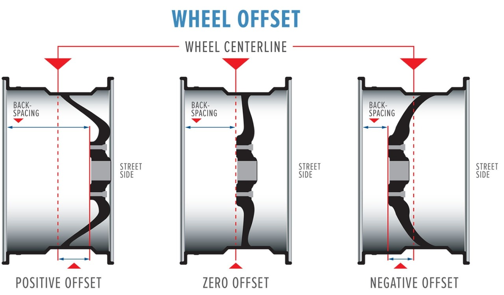

Purchasing new wheels for the first time can be a nightmare if you’re not familiar with the jargon that comes associated with it. You’ve likely heard the terms ‘PCD’ and ‘Centre Bore’ and are unsure what exactly they mean. We’ve put together a comprehensive guide to explain all the terminology you’ll need to know to purchase your new set of wheels!
This is the wheel height multiplied by its width - in inches. You’ll need to know your wheel size if you’re also going to look to purchase tyres for your vehicle. For example, if your wheel is 16 inches high, generally speaking, only tyres 16 inches in diameter will fit the wheel.
The offset of the wheel is the distance between the hub mounting surface to the centerline of the weel. Check out the diagram below from Les Schwab:
If the offset is ET00 (ET meaning Einpress Tiefe which translates to insertion depth) then this means the centerline of the wheel is exactly even with the hub mounting surface. If the offset is a positive number (e.g. ET10), the hub mounting surface is on the front half of the wheel, however, if it is a negative number (e.g. ET-10), this means the hub mounting surface is on the back half of the wheel. It’s extremely important to check your vehicles offset before buying new wheels. Take a look at your vehicles handbook or manufacturing guide if you’re unsure.
The centre bore of your wheel is the hole in the middle which helps centre the wheel correctly on the vehicle. This is measured in millimetres. So CB120 would be a centre bore of 120 millimetres. The purpose of the centre bore (when fitted correctly) is to reduce the vibration you feel when driving.
The pitch circle diameter, also known as the bolt circle diameter, shows what bolt fitment the wheel fits onto. Let’s take a look at an example. Usually, PCD would be written like this: 5x165.1 - this means that there are 5 holes around the centre, each 165.1 millimetres away from the hole on the opposite side. Don’t forget to keep up to date with us on Facebook too:
https://www.facebook.com/Oxfordperformanceautos/